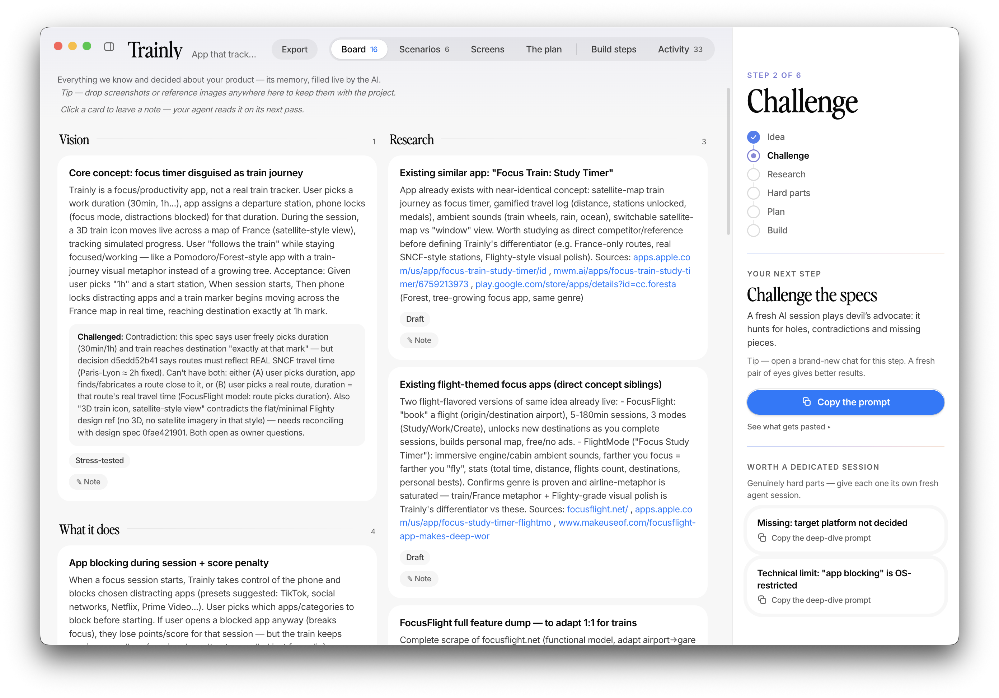
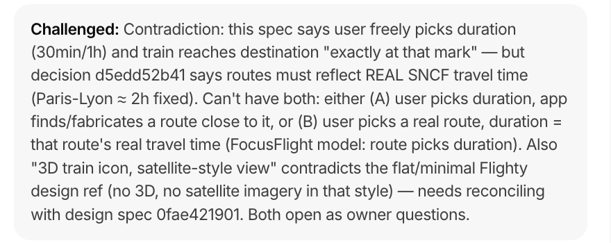
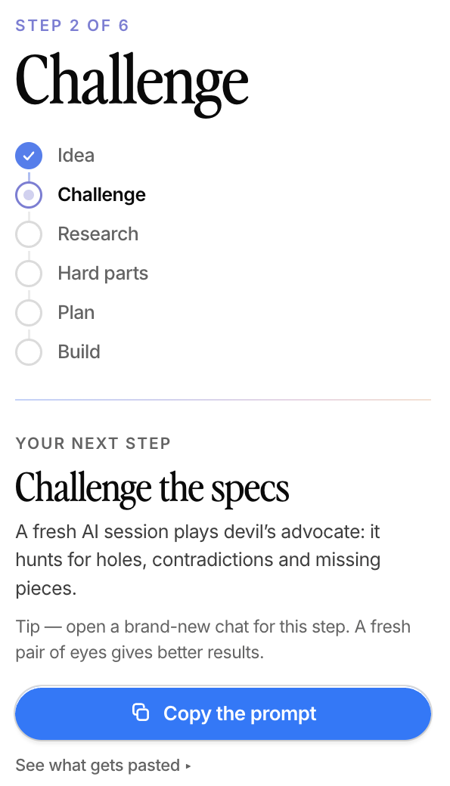
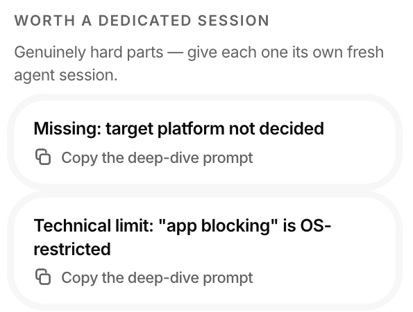

You already build by talking to an AI coding tool — Claude Code, Cursor, Windsurf… SpecDrive is the supervisor that sits beside it: the AI does the work, and it can't call anything “done” without proof.

Most attempts at disciplining an AI are just big instructions pasted into its head. They work on day one. Then its memory fills up, the rules fade, and it wanders off. SpecDrive takes the opposite bet: the discipline lives in the tools the AI must use — an MCP, the standard socket every modern AI coding tool can plug into — where no amount of forgetting can erode it.
No forms, no jargon, nothing to write. Connect the AI agent you already use (Claude Code, Cursor, Windsurf, Gemini, Codex…) and describe what you want in your own words.
Blank page or a real codebase with users and history: both work. On an existing app, the agent studies the actual code first and plans changes that don’t break what already works.
Specs, usage scenarios, sketches of every screen, the plan, the risks — appearing on your screen as you speak. It’s your project’s memory, in plain words.
Ordered steps with dependencies, each one verified before it turns green. You watch real progress — and you can leave a note on any card; your agent reads it on its next pass.
The spec is finished — the enforcement isn’t. The same server now hands out the work: one task at a time, in dependency order, each one carrying the exact specs and choices it has to respect. “Done” isn’t a claim, it’s evidence. And the loop can’t be walked out of early — it closes only when everything still lines up and a fresh session, one that never wrote a line of the code, has signed it off.
Launch the autonomous run and walk away: the agent takes the next step, proves it, checks it off, takes the next one. And here is the part that changes everything — it can stop at any moment and lose nothing.
Every finished step is already saved on the big build to-do list — with its proof. Nothing lives in the agent’s head, so nothing is lost when the session ends.
Open a fresh chat whenever you’re back. It asks the board for the next step and resumes exactly where the last one stopped — same rules, same order, same discipline.
A question only you can answer, a genuinely stuck step, or the end of its budget — the run ends with a plain-words report, never by silently pushing through.
Three moments from the screenshot above — the kind of thing the board does for you all day.



Everything above, in one place — the six guarantees, each enforced by the tools, never by trust.
A step can’t be marked done without evidence: what was run, what appeared on screen. It’s shown to you under every finished step.
A project can’t close until a fresh session — one that didn’t write the code — has reviewed it. And yesterday’s review never covers today’s changes.
Every plan must end with tests and a security & privacy pass. Skipping anything requires a written reason that lands on your board, visibly.
If the code changes while nobody’s watching the board, you get a warning before anything is trusted again.
Company charter, compliance, “always in French”, “data stays in the EU” — set standing rules once per folder; every project inside follows them, in every phase.
Click any card, leave a note in your own words. Your agent treats it as top priority and reports back what it did about it.
Your company’s non-negotiables shouldn’t be re-explained at the start of every project. Put them on a folder once — security, design, structure, or anything else you care about, from a ready-made preset or in your own words. Every project born in that folder starts with them already loaded, from the first spec to the last line of code.
SpecDrive doesn’t replace your AI tool — it supervises the one you already have. One click connects the tools we detect; one copy-paste connects any other. And everything — your specs, your plans, your data — stays on your Mac.
The board, the server, the rules — all of it is on GitHub. Read the code, open an issue, or send us a change. We’d rather build this with you than for you.